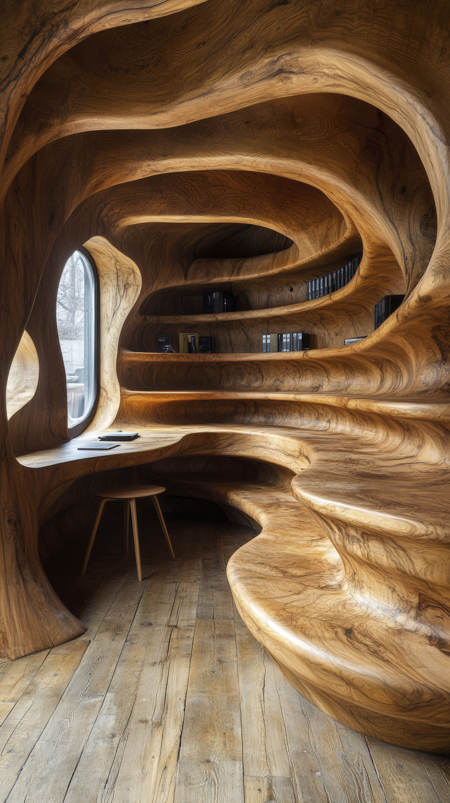

From forest roots to modern factories, Sri Lanka’s timber journey blends tradition, craftsmanship, and technology.
Each grain tells a story of skill, sustainability, and innovation building a bridge between heritage and the future.
GRAINVERSE
Deep in Sri Lanka's quiet forests, where sunlight filters through leaves and time respects nature’s pace, a quiet revolution begins.
GRAINVERSE is where the past and future meet, grain by grain.
For centuries, artisans have shaped timber into stories of faith, culture, and identity from the carvings of Kandyan temples to the furniture of Moratuwa.
Yet today, the soft rhythm of our ancestors’ craft is challenged by mass production.
The goal is not to abandon tradition, but to prove that this human craftsmanship deserves preservation and elevation.
The Soul of Wood. The Science of Tomorrow.
GRAINVERSE is more than a brand it’s an ecosystem uniting artisans, engineers, and designers.
With technology, Sri Lankan timber processing can evolve while honoring its cultural roots.
Imagine a carpenter in Matale guiding a CNC router to reproduce his grandfather’s carving, or a designer in Colombo crafting furniture in 3D before the first cut.
This is innovation with roots where ancestral skill meets digitalization, and every piece tells a timeless story.
Reimagining the Production Chain
The strength of Sri Lanka’s timber and furniture sector lies in its people but progress depends on process.
Each stage of the value chain, from sawing and drying to finishing and export, must embrace modernization.
Digital inventory systems, precision cutting, and sustainable sourcing can minimize waste and maximize profitability.
Emerging technologies from 3D scanning to robotic finishing are transforming workshops into smart, connected facilities that combine tradition with innovation.
Bridging Skill Gaps and Building Capacity
Modernization means little without skilled people to drive it.
Many workers in timbermills and furniture workshops still stay on inherited knowledge rather than technical training.
To bridge this gap, national programs, technical institutes, and industry partnerships can introduce certified courses in timber processing technology, machinery maintenance, lean production, and sustainable design.
When knowledge flows freely between the mill and the workshop, every worker from saw operator to designer becomes part of a intergrated, of future workforce.

Sustainability: The Foundation of Global Value
Sri Lanka’s forests are its living capital.
Promoting FSC-certified timber, reforestation , and zero-waste utilization will not only preserve resources but also attract international buyers seeking ethical products and earning global trust.
Every timber offcuts can be reused as panels or energy sources, turning waste into opportunity.
A greener process isn’t just good for the planet it’s good for business.
Sri Lanka to the World
Every nation has timber.
But only Sri Lanka has the artistry to make it sing. The island not as a small market, but as a creative powerhouse.
We are crafting a new identity for Sri Lankan timber: eco-smart, globally competitive, and proudly rooted in culture.
From rural workshops to international showrooms, It's shaping a new story for our industry one that balances innovation with integrity, profit with purpose, and craftsmanship with conscience.The label “Made in Sri Lanka” can stand for precision, beauty, and environmental responsibility.
Shaping the future One Grain at a Time
From forest to furniture, from raw grain to refined design Sri Lanka’s timber story is being rewritten.
Technology gives it speed. Sustainability gives it strength . Creativity gives it soul.
GRAINVERSE captures this harmony: a universe of grains, people, and possibilities.
It is the vision of an industry rising where every log, every line, and every artisan’s touch tells a story of transformation.